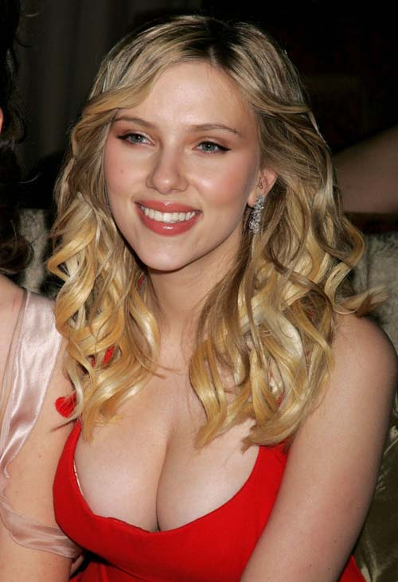

Scarlett Johansson was born on November 22, 1984 in New York City to parents Karsten Johansson and Melanie Sloan. Johansson made her film debut in the 1994 film North and was later nominated for the Independent Spirit Award for Best Female Lead for her performance in 1996's Manny & Lo. Johansson rose to fame with her roles in 1998's The Horse Whisperer and 2001's Ghost World.
She made the transition to adult roles with her performances in Sofia Coppola's Lost in Translation, for which she won a BAFTA Award, and Girl with a Pearl Earring, both of which earned her Golden Globe Award nominations in 2003. A role in A Love Song for Bobby Long earned her a third Golden Globe for Best Actress nomination. Following an appearance in The Island, Johansson garnered a fourth Golden Globe nomination, for Best Supporting Actress, for her role in Woody Allen's Match Point. She followed that with another Allen film, Scoop, with Hugh Jackman. A role in Brian de Palma's film noir The Black Dahlia was followed by a second role opposite Hugh Jackman in The Prestige, also starring Christian Bale.
Following a 2007 appearance in The Nanny Diaries, Johansson starred in the 2008 films The Other Boleyn Girl, opposite Natalie Portman and Eric Bana, and the Woody Allen-directed film, Vicky Cristina Barcelona, with Javier Bardem and Penélope Cruz. She appeared in He's Just Not That into You (2009) and as the anti-heroine Natasha Romanoff in Iron Man 2 (2010), with Robert Downey, Jr. and Samuel L. Jackson. Johansson won the 2010 Tony Award for Best Featured Actress in a Play for her part in A View From the Bridge.
On May 20, 2008, Johansson debuted as a vocalist on her first album, Anywhere I Lay My Head, which included cover versions of Tom Waits songs. Her second album, Break Up, with Pete Yorn was released in September 2009.
Johansson is a Global Ambassador for the aid and development agency, Oxfam. She married fellow actor Ryan Reynolds in 2008.
Actor Biographies Main Page
Megan Fox
Tom Hanks
Sir Sean Connery
© 2010 Jeremy R Perry. All rights reserved.
E mail me: jeremyrperry@gmail.com